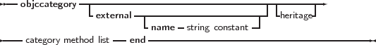
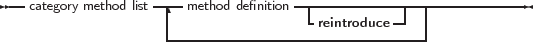

Similar to class helpers in Object Pascal, Objective-C has Categories. Categories allow to extend classes without actually creating a descendant of these classes. However, Objective-C categories provide more functionality than a class helper:
The definition of an objective-C class closely resembles a protocol definition, and is started with the objccategory keyword:
_________________________________________________________________________________________________________
Category type


___________________________________________________________________
Note again the possibility of an alias for externally defined categories: objective-C 2.0 allows an empty category name. Note that the reintroduce modifier must be used if an existing method is being replaced rather than that a new method is being added.
When replacing a method, calling ’inherited’ will not call the original method of the class, but instead will call the parent class’ implementation of the method.
The following is an example of a category definition:
Note that this declaration replaces the Hash method of every class that descends from NSObject (unless it specifically overrides it).